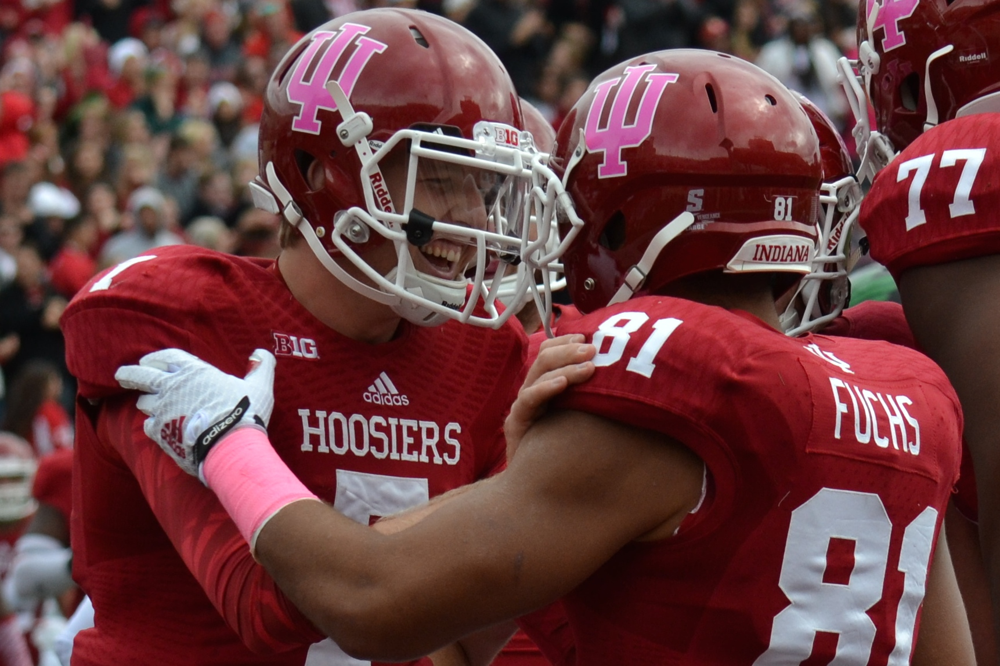

IU guard Yogi Ferrell looks at the court as he waits to throw the ball into play during the game againt Illinois.
IU guard Yogi Ferrell looks at the court as he waits to throw the ball into play during the game againt Illinois.
 Swimmers line up at the starting block during IU's meet against Auburn.
Swimmers line up at the starting block during IU's meet against Auburn.
Quarterback Nate Sudfeld celebrates with tight end Jordan Fuchs after a touchdown.
 Wright Cycling races around the track Sunday during Little 500's Team Pursuit at Bill Armstrong Stadium.
Wright Cycling races around the track Sunday during Little 500's Team Pursuit at Bill Armstrong Stadium.